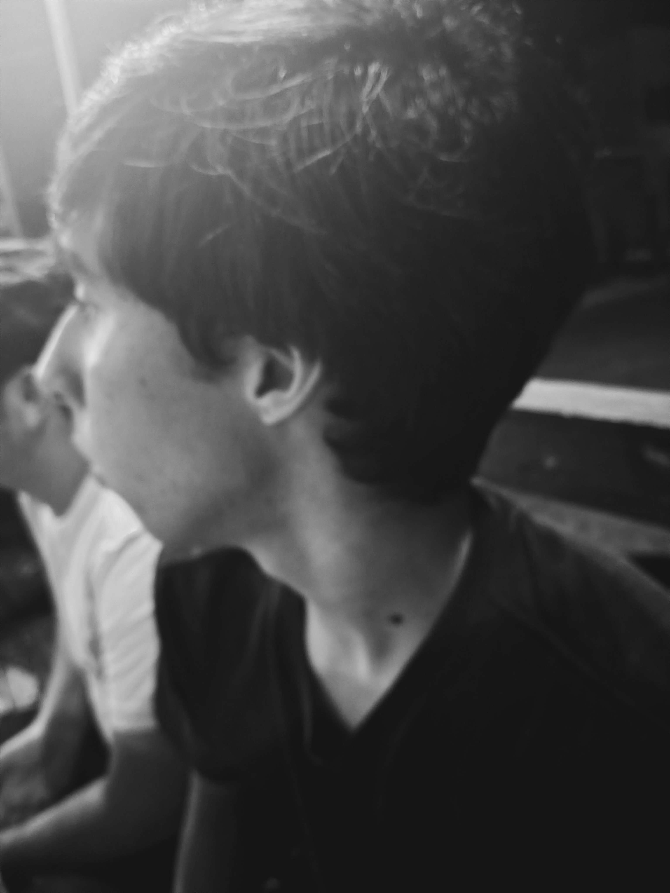

Sobre mim
Sou o João Davi, estudante da EEEP, e gosto muito de programação porque acho a área fascinante. Comecei a programar quando iniciaram as aulas do meu curso técnico. Sei que ainda tenho muito a aprender, mas sigo evoluindo e tendo fé na caminhada.
Atualmente, estou desenvolvendo este site em HTML e CSS. Anteriormente já estudei Python e Portugol, e agora estou estudando PHP e aprendendo a utilizar o GitHub. Com o passar do tempo, sinto que estou evoluindo cada vez mais, e quero me esforçar bastante para me tornar um ótimo profissional de TI.
Como mencionei, meu objetivo principal é me tornar um profissional completo na área de TI. Sei que o caminho é longo e cheio de altos e baixos, até porque meu interesse pela tecnologia começou ao entrar na EEEP. Fora dos estudos, gosto de assistir a séries e filmes, jogar e descansar. Tenho muitos sonhos e objetivos de vida, tanto na carreira quanto no meu crescimento pessoal.
